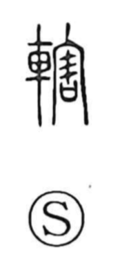

轄

Uncategorized
Kun: kusabi | On: katsu
to control ・ jurisdiction ・ wedge ・ to supervise
Explanation
Shirakawa reads 轄 as a phono‑semantic compound: the vehicle element 車 indicates the setting, while 害 serves as the sound marker, as in 割 (katsu). The original image is a wedge passed through one side of a wheel to keep it from slipping off—literally the chock that secures the axle. He suggests that choosing 害 hints at the creaking sound the wedge makes as the wheel turns. An old expression 轄撃 evokes the clacking of these wedges when many carts meet, later used as a metaphor for a teeming city. From naming the wedge that holds the wheel fast, the character broadened to mean tightening down, managing, and policing—hence the senses of control and jurisdiction.